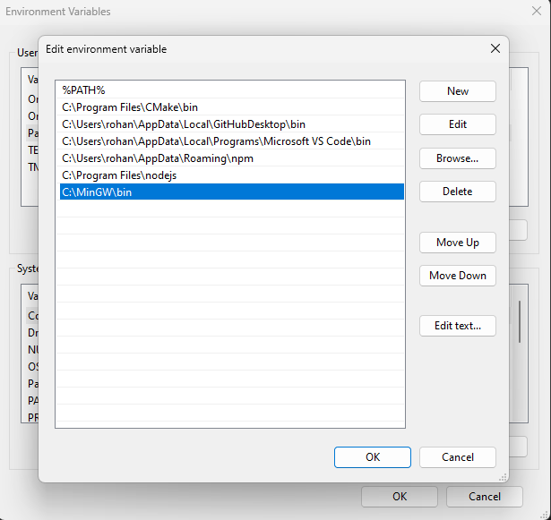
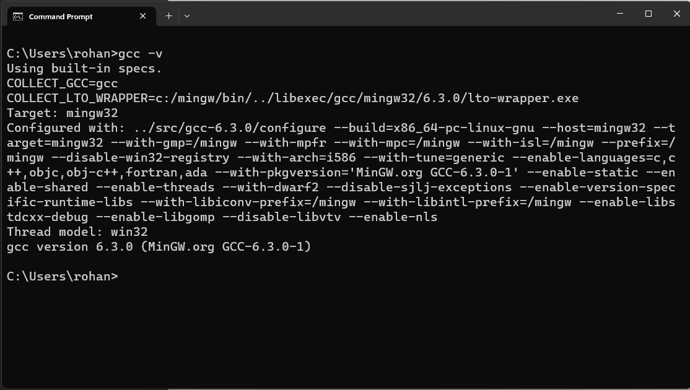

If you've ever seen the error message 'The term gcc is not recognized...' in VS Code or another IDE/Terminal, you know how confusing and disruptive it can be. This common problem can stop you in your programming tracks, but the solution is often simpler than it seems.
gcc : The term 'gcc' is not recognized as the name of a cmdlet, function, script file, or operable program. Check
the spelling of the name, or if a path was included, verify that the path is correct and try again.
At line:1 char:1
+ gcc
+ ~~~~
+ CategoryInfo : ObjectNotFound: (gcc:String) [], CommandNotFoundException
+ FullyQualifiedErrorId : CommandNotFoundException
The error "'gcc' is not recognized as the name of a cmdlet, function, script file, or operable program.” occurs for two primary reasons:
In previous Windows versions, the error looked like this: "'gcc' is not recognized as an internal or external command, operable program, or batch file."
This straightforward guide will provide the solutions to address this problem on the Windows platform.
If you do not have MinGW Compiler installed in your system, you need to install it from here. MinGW is a native Windows port of the GNU Compiler Collection (GCC), with freely distributable import libraries and header files for building native Windows applications.
We have already covered the installation of MinGW in another blog. Check this blog out for installing MinGW in your system.
After installing MinGW, along with the gcc and g++ compiler packages, you must set the PATH variable on your computer.
By default, the MinGW installer installs all the files to the "C:\MinGW\bin" folder. If you have changed the installation directory while installing it, you need to give the location of that folder. This is how it will look:
Click ok to close all the dialogue boxes.
To test if the gcc compiler or the g++ compiler is installed correctly, open a
cmd/PowerShell/terminal window and type the following command.
For gcc compiler:
gcc –v
For g++ compiler:
g++ -v
Resolving the "The term gcc is not recognized as the name of..." issue follows a simple procedure once you're familiar with the necessary steps. By verifying the proper installation and configuration of MinGW, you'll ensure a seamless coding experience. Hope that helps and happy coding 🙂